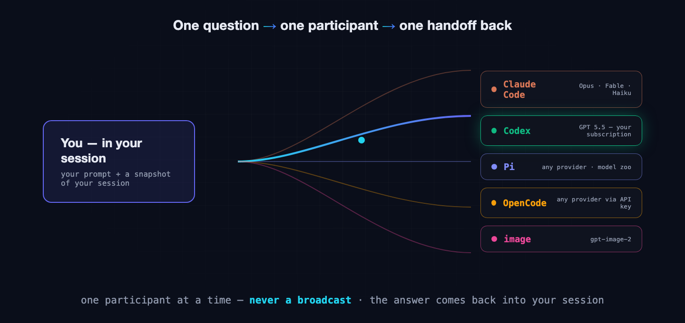
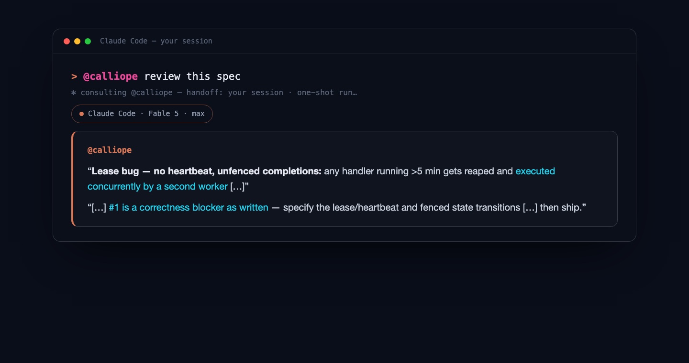
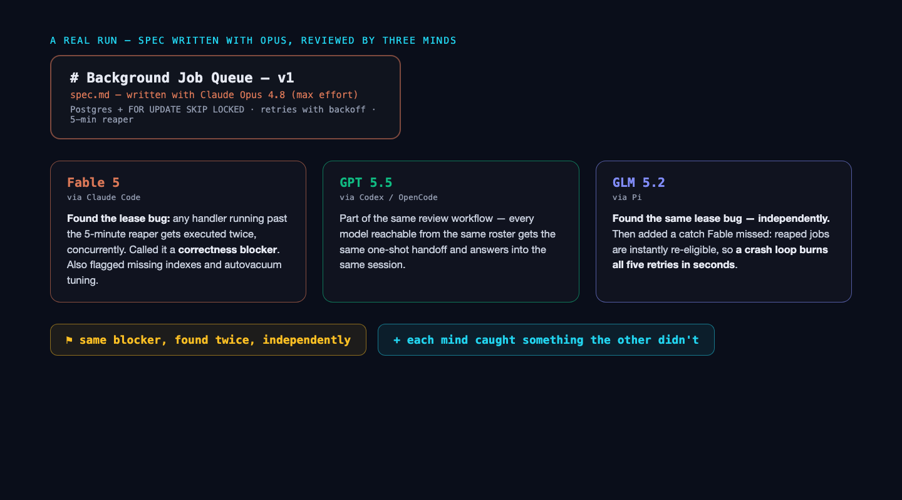

I asked two different AI models to review the same spec. They found the same correctness bug — independently — and each caught one thing the other missed. That run convinced me more than any benchmark ever has.
ConsensFlow is a free, open-source tool that lets the AI you're already coding with ask a different AI for a second opinion — or hand it a task outright — without you ever leaving your session. It runs inside Claude Code (as a plugin) and inside Pi (as an extension), and it can reach Claude Code, Codex, Pi and OpenCode — and every model those engines can run — through the subscriptions and API keys you already have.
The problem: confidence is not correctness
Modern coding agents are excellent — and excellently confident. Ask one whether your job queue should live in Redis or Postgres, and you'll get a firm, well-argued answer in seconds. Ask it to review its own plan, and it will mostly agree with itself. That's not a character flaw; it's what a single model does. Every model has blind spots, and a model can't see its own.
The obvious fix — ask another AI — comes with a tax. You open a second window, copy your context over, lose the thread, paste the answer back, and try to reconcile two conversations that never met. It's annoying enough that you skip it. And skipping it is how a confident wrong answer ships.
Code review solved this problem for humans decades ago: nobody merges serious work on the author's word alone. We just never gave our AI tools the same courtesy.
One question, one participant, one handoff back
ConsensFlow does exactly one thing. You ask a named participant a question, and it routes that question — together with a snapshot of your current session — to that participant's engine, runs it as a one-shot process, and brings the answer back into your session.

Three design choices matter here:
- One participant at a time — never a broadcast. You're having a conversation, not running a poll. Consensus, when you want it, is something you build by consulting minds sequentially and watching where they agree — which turns out to be far more informative than a vote.
- The handoff is your session. The participant sees what you've been working on — the question arrives with context, so the answer comes back grounded, not generic.
- The answer returns to you. No second window, no copy-paste, no reconciling threads. Your session stays the single place where your work happens.
A real run: one spec, three reviewers
Here's the workflow that sold me on my own tool, with the actual outputs.
I had Opus write a compact engineering spec — a Postgres-backed job queue using FOR UPDATE SKIP LOCKED: schema, claiming query, retry policy with backoff, a reaper for crashed workers, observability. A solid spec. It read production-ready.
Then, without leaving the session, I asked for reviews:

Fable 5 (running through Claude Code) came back with a finding I had not seen: the spec's reaper re-queues any job whose lock is older than five minutes — but nothing refreshes the lock. So any handler that legitimately runs longer than five minutes gets executed twice, concurrently. It called this a correctness blocker, and it was right. It also flagged missing indexes and autovacuum tuning for a table with this churn profile.
GLM 5.2 (running through Pi) reviewed the same spec with no knowledge of Fable's answer. It found the same lease bug on its own — and then added one Fable missed: reaped jobs go back in the queue instantly, with the crash counting toward the retry budget, so a crash-looping handler burns all five attempts in seconds instead of backing off.

Two independent minds converging on the same blocker is a signal no single review can give you. Each one also catching something unique is the bonus that makes the habit stick. This is what I mean by consensus: not a majority vote, but independent agreement you can watch happen — plus the disagreements, which are often worth even more.
Not just specs. Not just advice.
The spec review is the flagship example because convergence is so visible there — but the flow is question-shaped, not spec-shaped. I run the same move on code all the time: a diff I'm not sure about, a function that feels too clever, a migration before it touches production. @calliope review this diff works exactly like the spec review did — the participant gets your session as context and reads the actual code.
And participants don't just give opinions — they can do work. Each one runs as a real coding agent with read-write access confined to your project workspace. That unlocks my favorite economic trick: delegating the easy tasks to a cheap, fast model instead of spending your main session on them.
> @nike implement the retry helpernike is one of the fast-tier presets — Gemini 3.5 Flash through Pi. It goes off, writes the file, and reports back, while your main session — the expensive, deeply-primed Opus or Fable you're actually thinking with — never breaks focus. There's a whole fast tier for this: nike (Gemini 3.5 Flash), hermod (Haiku 4.5), loki (GPT 5.5 at medium effort), freya and zephyros (DeepSeek V4 Flash). Routine implementation, boilerplate, test scaffolding, one-file utilities — flash-class models handle these fine, and they cost a rounding error.
The consent gate applies to work exactly as it does to advice: the participant's changes sit in your workspace for inspection — git diff, look, decide — and nothing becomes part of your project until you keep it.
Fifty named minds, ready to go
Participants are just named configurations: an engine, a model, an effort level. ConsensFlow ships a catalog of fifty presets, pre-named and pre-configured — zeus is Claude Opus at max effort, calliope is Fable 5 at max, athena is GPT 5.5 through Codex, prometheus is GLM 5.2 through Pi, and so on. Add the ones you want:
cf participants add zeus calliope forseti prometheusPresets keep their names; you only invent names when you define a custom participant — and you can, since models are free strings passed straight to the engine. The roster lives in one shared file (~/.consensflow/participants.json), so the same participants are available whether you're in Claude Code or Pi.
The reach is the practical win:
- GPT, through the ChatGPT/Codex subscription you already pay for — no extra API bill.
- DeepSeek, Gemini, Kimi, Qwen, Grok, Llama, Mistral, MiniMax — through OpenCode or Pi, with an API key.
- Another Claude — a second Opus, Fable or Haiku on your existing Claude login, for intra-family second opinions.
- An image participant — gpt-image-2 for stills and covers, same one-question flow.
Install
In Claude Code, two commands and a restart:
claude plugin marketplace add ngvoicu/consensflow-cc
claude plugin install consensflow@consensflow-ccIn Pi, one:
pi install https://github.com/ngvoicu/consensflow-piThen ask by name, right in your session:
> @calliope review this spec
> @prometheus poke holes in thatNothing is kept without your yes
Consulting is free-form and encouraged; acting is gated. By default participants run confined to your project workspace, and whatever a participant produces — advice, diffs, files — nothing becomes part of your project without your explicit approval. There's exactly one escalation (full-auto), and you have to ask for it by name. The consent gate is the difference between a second opinion and a second cook in your kitchen.
What it's not
Honesty section. ConsensFlow won't make decisions for you — it gives you more eyes, and you stay the judge; that's the design, not a limitation to fix. It doesn't blend answers into one synthetic verdict — you see each mind's actual words, disagreements included. And it isn't a swarm framework: one question goes to one participant at a time, because that's how you keep a review independent and an audit trail readable.
Get it
ConsensFlow is free and open source (MIT):
- Site & docs: consensflow.ngvoicu.dev
- Claude Code plugin: github.com/ngvoicu/consensflow-cc
- Pi extension: github.com/ngvoicu/consensflow-pi
Install it, run your next big decision past a different mind, and see what your second opinion catches. Mine caught a double-execution bug that would have paged me at 3 a.m. — I consider that argument closed.
ConsensFlow is part of a larger AI-native toolkit — alongside Specmint (durable AI coding specs) and Kluris (team knowledge brains). If you're taking your team AI-native, start with Becoming an AI Native Company.